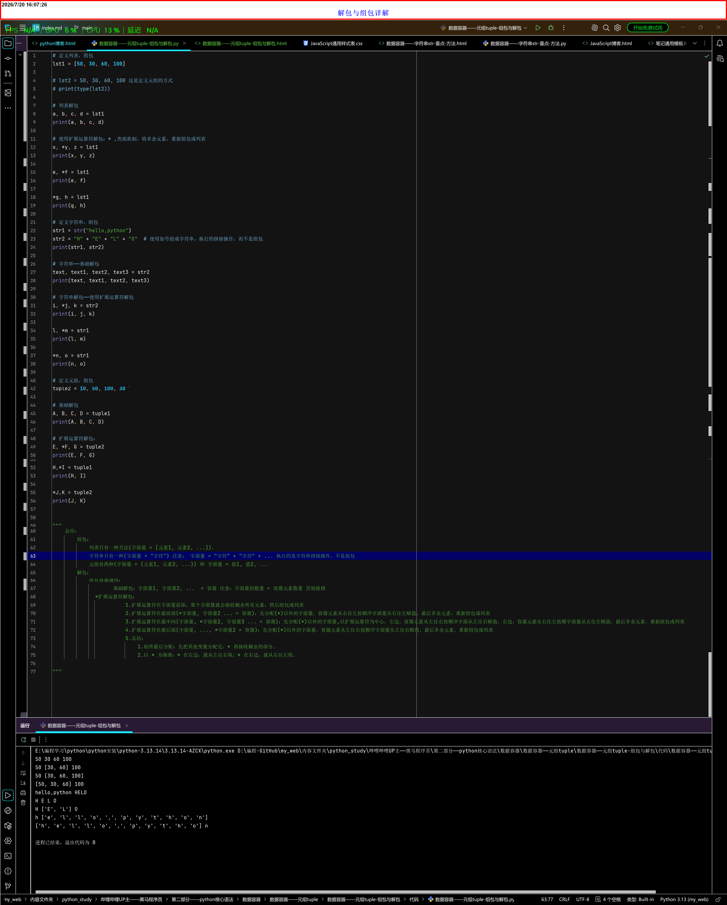

元组tuple-组包与解包
组包与解包概念
- 组包(
Packing)：将多个值合并到一个容器(元组、列表)中 - 解包(
Unpacking)：将容器(元组、列表)解开成独立的元素，分别赋值给多个变量 - 解包高阶操作：
*：扩展运算符 - 列表list-解包
-

关于容器的组包操作
- 列表只有一种方法(
字面量 = [元素1, 元素2, ...]) - 字符串只有一种(
字面量 = "字符") 注意：字面量 = "字符" + "字符" + ...执行的是字符串拼接操作，不是组包 - 元组有两种 (
字面量 = (元素1, 元素2, ...))和字面量 = 值1, 值2, ...
关于容器解包操作
-
基础解包：
字面量1, 字面量2, ... = 容器- 注意：字面量的数量 = 容器元素数量 否则报错
-
扩展运算符(
[*])解包- 扩展运算符在字面量前面，那个字面量就会接收剩余所有元素，然后组包成列表
- 扩展运算符在最前面(
*字面量, 字面量2 ... = 容器)：先分配(*)以外的字面量，容器元素从右往左按顺序字面量从右往左赋值，最后多余元素，重新组包成列表 -
扩展运算符在最中间(
字面量, *字面量2, 字面量3 ... = 容器)：先分配(*)以外的字面量,以扩展运算符为中心，左边，容器元素从左往右按顺序字面从左往右赋值，右边，容器元素从右往左按顺字面量从右往左赋值，最后多余元素，重新组包成列表 - 扩展运算符在最后面(
字面量, ..., *字面量2 = 容器)：先分配(*)以外的字面量，容器元素从左往右按顺序字面量从左往右赋值，最后多余元素，重新组包成列表 -
总结
- 始终最后分配：先把其他变量分配完，
*再接收剩余的部分 - 以 * 为基准：
*在左边，就从左往右取；*在右边，就从右往左取。
- 始终最后分配：先把其他变量分配完，
-
解包与解包同时操作(也叫合并)
c, b, a = a, b, c-
具体的工作流程：
a = 100, b = 200, c =300
先组包：t = a, b, c # 那么：t = (100,200,300)
再解包: c, a, b = t # 对应的：c=100，a=200, b=300
那么成功的将：a = c = 100, b = a = 200, c = b = 300进行了交换
既然都是t作为中间变量，其实可以省略为：c, b, a = a, b, c这即使组包与解包的合并 - 说白了就是：先将右边的值，临时组包成元组，再解包赋值给左侧